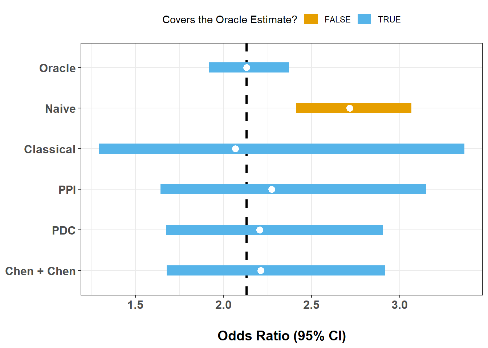

Code
library(ipd)
library(broom)
library(tidyverse)Protein Disorder and PTMs
Apply IPD methods in a proteomics setting to estimate associations when key outcomes are model-predicted rather than directly measured.

Modern protein biology increasingly relies on machine learning predictions. AlphaFold is an AI-powered system developed by Google DeepMind that predicts a protein’s 3D structure from its amino acid sequence with high accuracy. By utilizing deep learning and neural networks, it has modeled nearly all known proteins, accelerating research in drug discovery, disease understanding, and biotechnology.
AlphaFold now provides structural annotations for essentially the entire proteome, enabling large-scale analyses that were previously impossible. However, many downstream biological questions still depend on statistical inference, for example, asking whether post-translational modifications (PTMs) preferentially occur in intrinsically disordered regions (IDRs).
This module walks through such an analysis using the ipd package. You will learn how to:
The module is designed so that you can reproduce the analysis on your own using only the provided dataset and instructions.
AlphaFold predicts 3D protein structure from sequence at near-experimental accuracy for many proteins. These predictions can be post-processed to identify IDRs, i.e., segments that do not adopt a stable fold.
IDRs play central roles in signaling and regulation. They are flexible, accessible, and often enriched for short linear motifs. Many post-translational modifications, especially phosphorylation, ubiquitination, and acetylation, are hypothesized to concentrate in IDRs, supporting a model in which structural disorder enables rapid regulatory control.
In this workshop, each amino acid residue has:
Y: A binary “gold-standard” disorder labelYhat: A predicted probability of being disordered (derived from AlphaFold)phosphorylatedubiquitinatedacetylatedOur scientific question is:
Are residues with a given PTM more likely to lie in intrinsically disordered regions?
For a chosen PTM, Z:
Z = 1 if the residue carries that PTMY = 1 if the residue is in an IDRWe estimate:
\[ \text{OR} = \frac{\text{Odds}(Y=1\mid Z=1)}{\text{Odds}(Y=1\mid Z=0)} \]
using logistic regression.
However, in practice we may have that:
Y is only observed on a labeled subsetYhat is available everywhereThis is exactly the setting for Inference with Predicted Data (IPD).
By the end of this module, you will be able to:
Please first load the ipd, broom, and tidyverse packages:
library(ipd)
library(broom)
library(tidyverse)We have included file alphafold.RData, containing a tibble named alphafold with columns:
YYhatphosphorylatedubiquitinatedacetylatedEach row corresponds to a residue.
Before doing any inference, we will want to understand the data. Try loading the dataset and answering the following:
This gives you basic biological context and sanity-checks the input.
load("data/alphafold.RData")
glimpse(alphafold)Rows: 10,802
Columns: 5
$ Y <dbl[1d]> <array[26]>
$ Yhat <dbl[1d]> <array[26]>
$ phosphorylated <dbl[1d]> <array[26]>
$ ubiquitinated <dbl[1d]> <array[26]>
$ acetylated <dbl[1d]> <array[26]>alphafold |>
summarise(
n = n(),
frac_disordered = mean(Y, na.rm = TRUE),
phosphorylated = sum(phosphorylated == 1),
ubiquitinated = sum(ubiquitinated == 1),
acetylated = sum(acetylated == 1)
)# A tibble: 1 × 5
n frac_disordered phosphorylated ubiquitinated acetylated
<int> <dbl> <int> <int> <int>
1 10802 0.177 6017 3738 1171We should observe that our dataset contains:
For illustration, we will analyze one PTM at a time. For that PTM:
Z becomes its indicatorY is disorderYhat is the AlphaFold predictionLet’s study phosphorylation first. Please create an analytic dataset from the alphafold data with columns:
YYhatZ (phosphorylation indicator)This will be the working dataset for the rest of the workshop.
ptm <- "phosphorylated"
dat <- alphafold |>
transmute(
Y = as.integer(Y),
Yhat = as.numeric(Yhat),
Z = as.integer(.data[[ptm]])
)
dat |>
group_by(Z) |>
count() |>
ungroup() |>
mutate(pct = n / sum(n) * 100)# A tibble: 2 × 3
Z n pct
<int> <int> <dbl>
1 0 4785 44.3
2 1 6017 55.7Here we defined the basic analytic variables:
Y: True DisorderYhat: Predicted DisorderZ: PTM IndicatorWe should see that Z = 1 in approximately 56% of samples.
In practice, only a subset of residues may have trusted disorder labels. Here, we are fortunate to have ground-truth data for all of our samples. So, to study how IPD methods work in this setting, we will artificially:
n_labeled rowsYY with NA everywhere elseWrite a function that:
n_labeled residues"labeled"Y = NA for all othersset_labelThis mimics limited experimental labeling.
make_split <- function(dat, n_labeled, seed = NULL) {
if (!is.null(seed)) set.seed(seed)
idx <- sample.int(nrow(dat), size = n_labeled, replace = FALSE)
labeled <- dat[idx, ] |>
mutate(set_label = "labeled")
unlabeled <- dat[-idx, ] |>
mutate(Y = NA_integer_, set_label = "unlabeled")
bind_rows(labeled, unlabeled)
}By artificially masking labels, we created a realistic experimental scenario:
This mirrors many modern biological pipelines, where:
From this point forward, we will evaluate every method under this setup.
We will now compare several potential methods for drawing inference:
Oracle Logistic Regression (Y in All Samples, Not Usually Possible)
Classical Logistic Regression (Y in Labeled Samples Only)
Naive Logistic Regression (Imputed Y with threshold Yhat)
IPD Methods:
We will use these approaches estimate the same OR of Y/Yhat on Z.
With n_labeled = 400:
and compare how wide the intervals are at a significance level of alpha = 0.05.
alpha <- 0.05
stacked <- make_split(dat = dat, n_labeled = 400, seed = 12345)
fit_oracle <- glm(Y ~ Z, data = dat, family = binomial())
fit_classical <- glm(Y ~ Z, data = filter(stacked, set_label == "labeled"),
family = binomial())
fit_naive <- glm(I(Yhat > 0.5) ~ Z, data = stacked, family = binomial())
fit_ppi <- ipd(Y - Yhat ~ Z, method = "ppi", model = "logistic",
data = stacked, label = "set_label")
fit_plusplus <- ipd(Y - Yhat ~ Z, method = "ppi_plusplus", model = "logistic",
data = stacked, label = "set_label")
fit_pspa <- ipd(Y - Yhat ~ Z, method = "pspa", model = "logistic",
data = stacked, label = "set_label")
### CHEN AND CHEN HERE ### NEED CHEN AND CHEN
ex4_results <- bind_rows(
tidy(fit_oracle, conf.int = TRUE) |> mutate(Method = "Oracle"),
tidy(fit_classical, conf.int = TRUE) |> mutate(Method = "Classical"),
tidy(fit_naive, conf.int = TRUE) |> mutate(Method = "Naive"),
tidy(fit_ppi) |> mutate(Method = "PPI"),
tidy(fit_plusplus) |> mutate(Method = "PPI++"),
tidy(fit_pspa) |> mutate(Method = "PSPA")
### CHEN AND CHEN HERE ### NEED CHEN AND CHEN
) |>
filter(term == "Z") |>
mutate(
Method = factor(Method) |>
fct_relevel("Oracle", "Classical", "Naive", "PPI", "PPI++", "PSPA"), ### NEED CHEN + CHEN
OR = exp(estimate),
LCL = exp(conf.low),
UCL = exp(conf.high)) |>
select(Method, OR, LCL, UCL)
glimpse(ex4_results)Rows: 6
Columns: 4
$ Method <fct> Oracle, Classical, Naive, PPI, PPI++, PSPA
$ OR <dbl> 2.130875, 1.786170, 2.716635, 2.019634, 1.986547, 2.012504
$ LCL <dbl> 1.916754, 1.025458, 2.412201, 1.407421, 1.379686, 1.404529
$ UCL <dbl> 2.371509, 3.209141, 3.065175, 2.898153, 2.860340, 2.883653oracle_est <- ex4_results |> filter(Method == "Oracle") |> pull(OR)
ex4_results |>
mutate(covers = if_else((LCL <= oracle_est) & (UCL >= oracle_est), T, F)) |>
ggplot(aes(x = OR, xmin = LCL, xmax = UCL, y = Method, color = covers)) +
theme_bw() +
geom_vline(xintercept = oracle_est, linetype = 2, linewidth = 1.1) +
geom_linerange(linewidth = 5) +
geom_point(size = 3, color = "white") +
scale_y_discrete(limits = rev) +
scale_color_manual(values = palette.colors(4)[2:3]) +
labs(
x = "Odds Ratio (95% CI)",
y = NULL,
color = "Covers the Oracle Estimate?") +
theme(
legend.position = "top",
axis.text = element_text(face = "bold", size = 12),
axis.title.x = element_text(face = "bold", size = 14,
margin = margin(t = 20, unit = "pt")))
This single-split comparison highlights several key behaviors:
We should observe:
Yhat were poorly calibrated?We will now study how uncertainty changes as labeled sample size increases.
For each n = {200, 400, 800, 1500, 3000}, let’s:
We will store everything in a single results table for now so that we can inspect and plot these results in later exercises.
ns <- c(200, 400, 800, 1500, 3000)
num_trials <- 1 ### Up to 20
run_one <- function(n, t) {
s <- make_split(dat, n, seed = 1000 + n + t)
fit_oracle <- glm(Y ~ Z, data = dat, family = binomial())
fit_classical <- glm(Y ~ Z, data = filter(s, set_label == "labeled"),
family = binomial())
fit_naive <- glm(I(Yhat > 0.5) ~ Z, data = s, family = binomial())
fit_ppi <- ipd(Y - Yhat ~ Z, method = "ppi",
model = "logistic", data = s, label = "set_label")
fit_plusplus <- ipd(Y - Yhat ~ Z, method = "ppi_plusplus",
model = "logistic", data = s, label = "set_label")
fit_pspa <- ipd(Y - Yhat ~ Z, method = "pspa",
model = "logistic", data = s, label = "set_label")
### CHEN AND CHEN HERE ### NEED CHEN AND CHEN
results <- bind_rows(
tidy(fit_oracle, conf.int = TRUE) |> mutate(Method = "Oracle"),
tidy(fit_classical, conf.int = TRUE) |> mutate(Method = "Classical"),
tidy(fit_naive, conf.int = TRUE) |> mutate(Method = "Naive"),
tidy(fit_ppi) |> mutate(Method = "PPI"),
tidy(fit_plusplus) |> mutate(Method = "PPI++"),
tidy(fit_pspa) |> mutate(Method = "PSPA")
### CHEN AND CHEN HERE ### NEED CHEN AND CHEN
) |>
filter(term == "Z") |>
mutate(
Method = factor(Method) |>
fct_relevel("Oracle", "Classical", "Naive", "PPI", "PPI++", "PSPA"), ### NEED CHEN + CHEN
OR = exp(estimate),
LCL = exp(conf.low),
UCL = exp(conf.high),
n = n,
trial = t,
width = UCL - LCL) |>
select(Method, OR, LCL, UCL, n, trial, width)
}
ex5_results <- crossing(n = ns, trial = 1:num_trials) |>
mutate(out = map2(n, trial, run_one)) |>
select(out) |>
unnest(out)
glimpse(ex5_results)Rows: 30
Columns: 7
$ Method <fct> Oracle, Classical, Naive, PPI, PPI++, PSPA, Oracle, Classical, …
$ OR <dbl> 2.130875, 2.017544, 2.716635, 2.112385, 2.112385, 2.112126, 2.1…
$ LCL <dbl> 1.9167544, 0.9386853, 2.4122014, 1.3063051, 1.3063051, 1.307842…
$ UCL <dbl> 2.371509, 4.501192, 3.065175, 3.415871, 3.415871, 3.411021, 2.3…
$ n <dbl> 200, 200, 200, 200, 200, 200, 400, 400, 400, 400, 400, 400, 800…
$ trial <int> 1, 1, 1, 1, 1, 1, 1, 1, 1, 1, 1, 1, 1, 1, 1, 1, 1, 1, 1, 1, 1, …
$ width <dbl> 0.4547542, 3.5625063, 0.6529739, 2.1095660, 2.1095660, 2.103179…We have now quantified uncertainty across many labeled sample sizes.
The results table contains:
This enables direct comparison of statistical efficiency.
We should see:
n increases for all methods.This shows that unlabeled predictions have the potential to provide additional information when properly calibrated.
n, are methods variable across trials?Let’s plot five random trials for n = 400, overlaying a reference OR computed from the full dataset (i.e., the oracle regression results).
set.seed(1)
n_show <- 400
ex_trials <- sample(unique(ex5_results$trial), size = 1) ### size = 5)
ex6_results <- ex5_results |>
filter(n == n_show, trial %in% ex_trials) |>
mutate(
Method = factor(Method) |>
fct_relevel("Oracle", "Classical", "Naive", "PPI", "PPI++", "PSPA"),
trial = factor(trial),
covers = if_else((LCL <= oracle_est) & (UCL >= oracle_est), T, F)
)
ex6_results |>
ggplot(aes(x = OR, xmin = LCL, xmax = UCL, y = Method, color = covers)) +
theme_bw() +
facet_wrap(~ trial, nrow = 1) +
geom_vline(xintercept = oracle_est, linetype = 2, linewidth = 1.1) +
geom_linerange(linewidth = 5) +
geom_point(size = 3, color = "white") +
scale_y_discrete(limits = rev) +
scale_color_manual(values = palette.colors(4)[2:3]) +
labs(
x = "Odds Ratio (95% CI)",
y = NULL,
color = "Covers the Oracle Estimate?") +
theme(
legend.position = "top",
axis.text = element_text(face = "bold", size = 12),
axis.title.x = element_text(face = "bold", size = 14,
margin = margin(t = 20, unit = "pt")))
We should notice:
This illustrates an important distinction:
Precision alone is meaningless without calibration.
Naive methods are precise but biased. IPD methods balance both.
Plot mean CI width versus n for all methods.
Interpret:
ex7_results <- ex5_results |>
group_by(Method, n) |>
summarise(mn = mean(width, na.rm = TRUE), .groups = "drop")
ex7_results |>
ggplot(aes(x = n, y = mn, group = Method, color = Method)) +
theme_bw() +
geom_line(linewidth = 0.6) +
geom_point(size = 1.6) +
scale_x_continuous(breaks = ns) +
scale_color_manual(values = palette.colors(6)) + ### 7 with CHEN + CHEN
labs(
x = "Number of Labeled Observations (n)",
y = "Mean Confidence Interval Width") +
theme(
legend.position = "top",
axis.text = element_text(face = "bold", size = 12),
axis.title.x = element_text(face = "bold", size = 14,
margin = margin(t = 20, unit = "pt")),
axis.title.y = element_text(face = "bold", size = 14,
margin = margin(r = 20, unit = "pt")))
This figure summarizes efficiency. Key takeaways:
This is the operational value of IPD:
We can sometimes improve precision with fewer labels.
Finally, suppose we want to test:
\[ H_0: \text{OR} \le 1, \]
where we reject when the lower CI bound exceeds 1.
We will now estimate the smallest n_labeled such that:
and we will compare the two.
alpha_pval <- 0.05
target_power <- 0.80
n_experiments <- 1 ### Up to 100
run_one_ci <- function(s, method = c("PPI", "Classical")) {
method <- match.arg(method)
if (method == "PPI") {
fit <- ipd(Y - Yhat ~ Z, method = "ppi", model = "logistic",
data = s, label = "set_label", alpha = alpha_pval)
tt <- tidy(fit) |> filter(term == "Z")
c(LCL = exp(tt$conf.low), UCL = exp(tt$conf.high))
} else {
lab <- s |> filter(set_label == "labeled")
m <- glm(Y ~ Z, data = lab, family = binomial())
tt <- tidy(m, conf.int = TRUE) |> filter(term == "Z")
c(LCL = exp(tt$conf.low), UCL = exp(tt$conf.high))
}
}
power_at_n <- function(n_labeled, method = c("PPI", "Classical")) {
method <- match.arg(method)
rej <- replicate(n_experiments, {
s <- make_split(dat, n_labeled = n_labeled)
ci <- run_one_ci(s, method = method)
if (method == "PPI") {
as.integer(ci[["LCL.Z"]] > 1)
} else {
as.integer(ci[["LCL"]] > 1)
}
})
mean(rej)
}
n_grid <- sort(unique(round(seq(50, 1200, by = 50))))
power_tbl <- tibble(
n = n_grid,
ppi = map_dbl(n_grid, ~ power_at_n(.x, "PPI")),
classical = map_dbl(n_grid, ~ power_at_n(.x, "Classical"))) |>
pivot_longer(-n, names_to = "Method", values_to = "Power")
power_tbl# A tibble: 48 × 3
n Method Power
<dbl> <chr> <dbl>
1 50 ppi 0
2 50 classical 0
3 100 ppi 0
4 100 classical 0
5 150 ppi 1
6 150 classical 0
7 200 ppi 0
8 200 classical 0
9 250 ppi 1
10 250 classical 0
# ℹ 38 more rowsn80 <- power_tbl |>
group_by(Method) |>
filter(Power >= target_power) |>
summarise(n_for_80 = ifelse(n() == 0, NA_integer_, min(n)), .groups = "drop")
n80# A tibble: 2 × 2
Method n_for_80
<chr> <dbl>
1 classical 350
2 ppi 150power_tbl |>
ggplot(aes(x = n, y = Power, color = Method)) +
theme_bw() +
geom_hline(yintercept = target_power, linetype = 2) +
geom_line(linewidth = 1.1) +
geom_point(size = 2) +
scale_x_continuous(breaks = n_grid) +
scale_color_manual(values = palette.colors(3)[2:3]) +
labs(
x = "Number of Labeled Observations (n)",
y = "Estimated Power") +
theme(
legend.position = "top",
axis.text = element_text(face = "bold", size = 12),
axis.title.x = element_text(face = "bold", size = 14,
margin = margin(t = 20, unit = "pt")),
axis.title.y = element_text(face = "bold", size = 14,
margin = margin(r = 20, unit = "pt")))
We should observe:
This translates directly into experimental design:
IPD can potentially reduces sample size requirements for discovery.
Yhat is systematically biased?To impute Y, we previously used a value of 0.5 to threshold the predicted probabilities from AlphaFold. We can also repeat this experiment and vary the naive imputations with thresholds of 0.2, 0.4, 0.6, and 0.8.
thresholds <- seq(0.2, 0.8, 0.2)
naive_by_threshold <- function(thr) {
m <- glm(I(Yhat > thr) ~ Z, data = dat, family = binomial())
tidy(m, conf.int = TRUE) |>
filter(term == "Z") |>
transmute(
threshold = thr,
OR = exp(estimate),
LCL = exp(conf.low),
UCL = exp(conf.high),
width = UCL - LCL
)
}
ex9_results <- bind_rows(lapply(thresholds, naive_by_threshold))
ex9_results# A tibble: 4 × 5
threshold OR LCL UCL width
<dbl> <dbl> <dbl> <dbl> <dbl>
1 0.2 2.24 2.03 2.48 0.449
2 0.4 2.58 2.30 2.89 0.589
3 0.6 2.80 2.47 3.18 0.713
4 0.8 2.91 2.52 3.36 0.841ex9_results |>
ggplot(aes(x = OR, xmin = LCL, xmax = UCL, y = threshold)) +
theme_bw() +
geom_vline(xintercept = 1, linetype = 2, linewidth = 1.1) +
geom_linerange(linewidth = 5, color = palette.colors(3)[3]) +
geom_point(size = 3, color = "white") +
scale_y_continuous(breaks = thresholds) +
labs(
x = "Odds Ratio (95% CI)",
y = "Threshold for Yhat -> Binary Label") +
theme(
legend.position = "top",
axis.text = element_text(face = "bold", size = 12),
axis.title.x = element_text(face = "bold", size = 14,
margin = margin(t = 20, unit = "pt")),
axis.title.y = element_text(face = "bold", size = 14,
margin = margin(r = 20, unit = "pt")))
This module demonstrates how we can use IPD methods in biological workflows:
In this AlphaFold/PTM application, we saw that:
This setup appears across modern science and has applications in:
Anywhere predictions feed into downstream analysis, IPD applies.
Repeat the full workflow for:
Compare:
Different PTMs play distinct regulatory roles:
You may find that:
Assess whether:
This mirrors real exploratory proteomics.
If you continue this work:
Yhat to study robustnessRepeat the entire workflow for:
Which PTM shows the strongest enrichment in disorder?
AlphaFold enables proteome-scale structural annotation—but statistical inference still matters.
By combining:
Yhat)Y)you can:
This paradigm generalizes far beyond protein disorder—to any setting where ML predictions feed into downstream scientific inference.